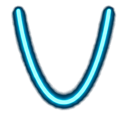
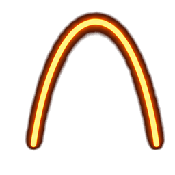
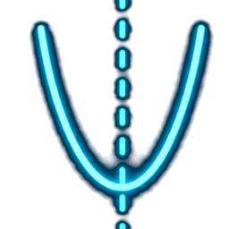
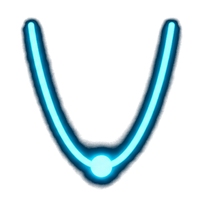

九年級上 · 數學
二次函數的圖形
拋物線的開口、平移與頂點
拖動滑桿，親手操控圖形的變化 🎢
互動式 Reveal.js 教學簡報
先複習：什麼是二次函數？
\( y = ax^2 + bx + c \quad (a \neq 0) \)
- 最高次方是 二次，所以叫「二次函數」
- \(a\) 一定不能是 0（否則就變一次函數）
- 它的圖形是一條 拋物線
- 本課重點：\(a\)、\(h\)、\(k\) 怎麼影響這條拋物線
👉 接下來每一頁，你都可以拖滑桿親手改變圖形！
a 決定了什麼？

a > 0：開口向上
拋物線像微笑 😊，有最低點

a < 0：開口向下
拋物線像難過 🙁，有最高點

|a| 越大
開口越「窄」、越陡

|a| 越小
開口越「寬」、越平緩
頂點式 \( y = a(x-h)^2 + k \) 🎯
頂點式的重點整理
\( y = a(x-h)^2 + k \)
| 性質 | 結果 | 說明 |
|---|
| 頂點 | \((h,\ k)\) | 拋物線的最低／最高點 |
| 對稱軸 | \(x = h\) | 通過頂點的鉛直線 |
| 開口方向 | a>0 向上 / a<0 向下 | 決定有最小或最大值 |
| 最小值 | a>0 時為 \(k\) | 當 \(x=h\) 時 y 最小 |
| 最大值 | a<0 時為 \(k\) | 當 \(x=h\) 時 y 最大 |
🗳️ 小試身手
一條拋物線頂點在 \((2,-3)\) 且開口向上，下列哪個方程式正確？
已作答：0 人
📈
重點回顧
- a：開口方向（正上負下）與寬窄
- h：左右平移，對稱軸 \(x=h\)
- k：上下平移，頂點 \((h,k)\)
把握住 a、h、k，任何拋物線你都畫得出來！